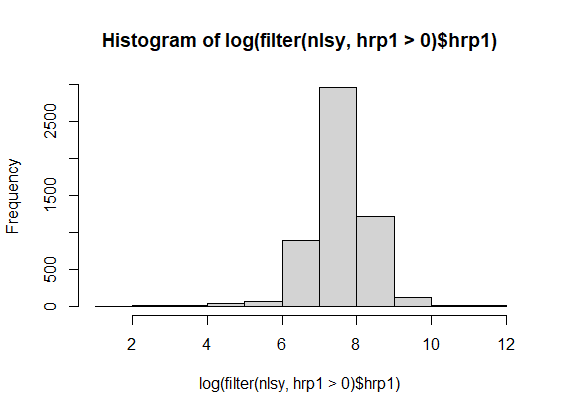

Problem Set 4
Question 1
The baseline model would be of log wages on education. However, this model would likely suffer from ommitted variable bias, so we could include controls for experience, age, education, and ability. Other factors such as region might affect labour market outcomes, so they could be an important control.
Question 3
a)
Most but not all individuals had a non-negative value for the primary work hours variable, which is consistent with some unemployment or intentional non-responses. The number of negative values is much higher for the secondary work variable, which would be consistent with fewer people working two jobs. Table include zeros.
| name | positive_dummy | count |
|---|---|---|
| hrp1 | 0 | 1727 |
| hrp1 | 1 | 5344 |
| hrp2 | 0 | 5875 |
| hrp2 | 1 | 1196 |
b)
Values are very high since they are coded in integers with the two left-most digits representing cents. For example, 500 stands for 5 dollars.
| hrp1 |
|---|
| Min. : 0 |
| 1st Qu.: 1225 |
| Median : 1910 |
| Mean : 2633 |
| 3rd Qu.: 3000 |
| Max. :110000 |
c)
The distribution seems to have thin tails and somewhat symmetric. It is centred around 8.

Question 4
a)
The weight should represent the amount of individuals each respondent’s answers’ represent, so the divided weight is how many 100s of individual’s each response represent. The mean is is the average number of one hundred people represented by individuals in the sample.
| sampweight |
|---|
| Min. : 56749 |
| 1st Qu.: 172806 |
| Median : 412156 |
| Mean : 474608 |
| 3rd Qu.: 733119 |
| Max. :1603933 |
b)
Since the group count and the mean sample seem to not be correlated, the survey is not representative of the populations.
c)
Most likely since each observation is a person, so these are the weights for each person in the sample.
Question 5
a)
For q3_4, the mode is to have completed high school and the second most frequent is to have completed college. It makes sense if you consider few people dropout of university or high school.
| q3_4 | n |
|---|---|
| 12 [12TH GRADE] | 2134 |
| 16 [4TH YEAR COLLEGE] | 840 |
b)
We drop five observations for individuals that did not know or refused to answer.
Question 6
a)
People are aged between 49 and 58 years, which could mean higher wages that the average population.
b)
We might control for age squared if we expecte non-linear effects of wage, e.g., income decreases when near retirement after peaking.
c)
mean(mom) |
mean(pop) |
|---|---|
| 11.85696 | 12.00948 |
d)
The new generation is more educated, but a gap persists.
| female | sum(wschl)/sum(sampweight) |
|---|---|
| 0 | 13.9 |
| 1 | 14.1 |
e)
The correlation is very high, 0.9349983. Parents influence their children schooling decisions.
f)
It might measure general academic skills rather than manual or technical ones.
g)
Around 11%.
Question 7
a)
The coefficient is around 0.11, which means that each extra year increases mean education by 11%. This results seems in line with the previous literature.
b)
The coefficient is now around 10.5%. The additional controls probably removed some ommited variable bias, so it is expect. Coefficients on parental schooling are positive while age is negative. The latter is likely true because the sample is older. Female is negative, which reflects the gender wage gap.
c)
The coefficient is slightly higher around 10.7%. The coefficient on afqt is positive and significant, which imply the existence of ability bias. However, parental schooling might have controlled for some of this.
d)
The coefficient becomes much smaller, around 8%. If this variable might be related to work disability, which is associated with specific earnings, then it could lead to reverse causality.
e)
The effect is much higher for early years of schooling, indicating non-linear effects. For the restricted sample, the direction of the effects looks similar.
f)
Of the variables I discuss, experience would likely be a better control than age here, given that the sample is restricted to a small range of ages. Additionally, an occupation control could also be useful. These would be created by the survey team based on answers to questions. As such, they could also be measured with error with answers are not informative.